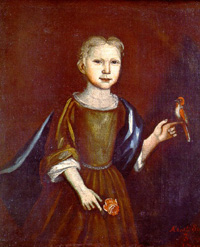
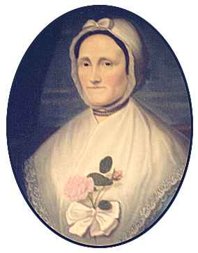

|
by Stefan Bielinski Christina Ten Broeck was born on December 30, 1718. She was the third of the twelve children of Albany civic leader Dirck Ten Broeck and his wife Margarita Cuyler. She grew up in Albany with her sisters and brother in a comfortable home on Market Street. At age twenty-one, Christina married Philip Livingston, Jr. at the Albany Dutch church in 1740. These Livingstons established their residence in New York City. But the first of her nine children was baptized at the Albany Dutch church in 1741. They also had a country house and farm on Brooklyn Heights. Philip Livingston became a successful merchant, provincial official, and a leader of the crusade for American liberties. As a member of the Continental Congress, Livingston and his family lived for a time in Philadelphia. Following the British occupation in 1776, his property in New York was seized and the family was sent upriver for safety. But soon, Philip Livingston became seriously ill. He saw his family for the last time in the spring of 1778. Then he returned to Congress in York, Pennsylvania where he died in June. By that time, sixty-year-old Christina had come home to Albany. Despite the years and distance, Christina's Albany roots always remained strong. She was the daughter (and heir) of a prominent Albany family and the older sister of General Abraham Ten Broeck. In 1764, her daughter married the Van Rensselaer patroon - making her a frequent guest at the Van Rensselaer manor house. A substantial inheritance from her husband, father, and brother included income acreage and houses in Albany. A doting grandmother, she spent her remaining years living with her daughters - both of whom had married Dutch Reformed ministers. Settled in Albany, she made her will in in 1800. Eighty-two-year-old Christina Ten Broeck Livingston died on June 29, 1801 and was buried in the Dutch church cemetery.
Portraits: The painting of the child done in 1721 has been attributed to Nehemiah Partridge and is in the collection of the Albany Institute of History and Art. The portrait of the older Christina about 1771 has been attributed to Abraham Delanoy (1742-95). Two versions are known to exist. One hangs with Delanoy's portrait of her husband at Clermont State Historic Site. See Ruth Piwonka, A Portrait of Livingston Manor (Friends of Clermont, 1986), pp. 52, 107, 164. Material culture: A dress made for her is preserved in the collections of the Albany Institute of History and Art. first posted: 8/20/01; last revised 9/5/01 |